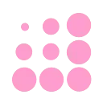
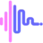
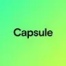

FanFuelYouTube и блогинг
В инструменте «FanFuel» можно готовить текст по теме и требованиям к содержанию. Ещё одно направление работы: готовить видеоматериалы для публикации.
YouTube и блогинг: Начните с темы и аудитории. Сравните работу со сценарием, субтитрами и экспортом в нужный формат площадки.
Перед съёмкой соберите короткий сценарий из одного вопроса аудитории. Молекула поможет распределить объяснение по сценам и отметить, где нужен наглядный пример на экране.
Зрители спрашивают, как выбрать настольную лампу. Составь сценарий трёхминутного видео: сравнение освещения, демонстрация регулировок, критерии выбора. Характеристики моделей я добавлю после проверки.

В инструменте «FanFuel» можно готовить текст по теме и требованиям к содержанию. Ещё одно направление работы: готовить видеоматериалы для публикации.

Genmo используют, чтобы собирать видеосцену по описанию или визуальному исходнику. Ещё одно направление работы: готовить видеоматериалы для публикации.

В инструменте «HumanPal» можно собирать видеосцену по описанию или визуальному исходнику. Ещё одно направление работы: готовить видеоматериалы для публикации.

В инструменте «Katalist» можно собирать видеосцену по описанию или визуальному исходнику. Ещё одно направление работы: готовить видеоматериалы для публикации.

Media.io относится к инструментам, которые помогают готовить музыкальную композицию по заданию. Ещё одно направление работы: собирать видеосцену по описанию или визуальному исходнику.

OpenAI Sora используют для задачи: собирать видеосцену по описанию или визуальному исходнику. Ещё одно направление работы: готовить видеоматериалы для публикации.

PixVerse предназначен для создания видеоматериала из запроса или изображения. Конкретное движение и обязательные детали сцены стоит обозначить заранее.

Submagic рассчитан на задачи, где нужно собирать видеосцену по описанию или визуальному исходнику. Ещё одно направление работы: готовить видеоматериалы для публикации.
Сравнивать «Thumbnails AI» с другими инструментами раздела «Генерация изображений» удобнее на одинаковом исходном материале.
TinyFile Bot относится к инструментам, которые помогают собирать видеосцену по описанию или визуальному исходнику. Ещё одно направление работы: готовить видеоматериалы для публикации.

Vsub используют, чтобы собирать видеосцену по описанию или визуальному исходнику. Ещё одно направление работы: готовить видеоматериалы для публикации.

WaveSpeedAI рассчитан на задачи, где нужно собирать видеосцену по описанию или визуальному исходнику. Ещё одно направление работы: получать изображения из словесного задания.

WritePoetry.ai рассчитан на задачи, где нужно готовить музыкальную композицию по заданию. Ещё одно направление работы: готовить видеоматериалы для публикации.

AICUT рассчитан на задачи, где нужно собирать видеосцену по описанию или визуальному исходнику. Ещё одно направление работы: готовить видеоматериалы для публикации.

В инструменте «Creatify» можно собирать видеосцену по описанию или визуальному исходнику. Ещё одно направление работы: готовить материалы о товарах и услугах.
Elai.io предназначен для подготовки видео с использованием ИИ-аватаров. Платформа предусматривает преобразование текста в ролик и шаблоны для переноса презентаций PPT в видеоформат. Такой набор рассчитан на объясняющие материалы, в которых текстовый или слайдовый источник становится основой видеоподачи с цифровым ведущим.

freebeat.ai относится к инструментам, которые помогают готовить музыкальную композицию по заданию. Ещё одно направление работы: собирать видеосцену по описанию или визуальному исходнику.

Google Vids относится к инструментам, которые помогают собирать видеосцену по описанию или визуальному исходнику. Ещё одно направление работы: готовить видеоматериалы для публикации.
Lanta AI используют для задачи: собирать видеосцену по описанию или визуальному исходнику. Ещё одно направление работы: готовить видеоматериалы для публикации.

MakeUGC используют, чтобы собирать видеосцену по описанию или визуальному исходнику. Ещё одно направление работы: готовить видеоматериалы для публикации.
«Notegpt» помогает упорядочить рабочие заметки. «Notegpt» также помогает получить сокращённое содержание материала.

NVIDIA Studio используют для задачи: готовить трёхмерный объект для проекта. Ещё одно направление работы: собирать видеосцену по описанию или визуальному исходнику.

Simplified рассчитан на задачи, где нужно готовить материалы о товарах и услугах. Ещё одно направление работы: собирать видеосцену по описанию или визуальному исходнику.

Spikes Studio используют для задачи: собирать видеосцену по описанию или визуальному исходнику. Ещё одно направление работы: готовить видеоматериалы для публикации.

Ssemble используют, чтобы собирать видеосцену по описанию или визуальному исходнику. Ещё одно направление работы: готовить видеоматериалы для публикации.

Toolify рассчитан на задачи, где нужно исследовать тему и разбирать найденную информацию. Ещё одно направление работы: использовать разные модели через общее рабочее пространство.

В инструменте «Wan AI» можно собирать видеосцену по описанию или визуальному исходнику. Ещё одно направление работы: получать изображения из словесного задания.

AIVideo относится к инструментам, которые помогают собирать видеосцену по описанию или визуальному исходнику. Ещё одно направление работы: собирать видео с цифровым ведущим.

В инструменте «Arcads» можно готовить материалы о товарах и услугах. Ещё одно направление работы: собирать видеосцену по описанию или визуальному исходнику.

Claap рассчитан на задачи, где нужно готовить ответы на обращения клиентов. Ещё одно направление работы: обрабатывать голосовые обращения.

GSpeech используют для задачи: подготавливать озвучку текстового материала. Ещё одно направление работы: готовить видеоматериалы для публикации.

Higgsfield AI рассчитан на задачи, где нужно собирать видеосцену по описанию или визуальному исходнику. Ещё одно направление работы: готовить видеоматериалы для публикации.

iMyFone Filme (MagicMic) рассчитан на задачи, где нужно подготавливать озвучку текстового материала. Ещё одно направление работы: готовить видеоматериалы для публикации.

Pictory используют для превращения подготовленного содержания в видео. Отбор эпизодов и текст в кадре стоит проверять по главной мысли исходного материала.

Plask Motion используют, чтобы готовить трёхмерный объект для проекта. Ещё одно направление работы: собирать видеосцену по описанию или визуальному исходнику.

В инструменте «Scripe» можно готовить текст по теме и требованиям к содержанию. Ещё одно направление работы: подготавливать материалы для социальных сетей.
«YTSummary» помогает строить карту связанных идей.

AnimateDiff добавляет движение к генеративной работе с изображениями. Для осмысленного результата нужны описание сцены и подходящее окружение запуска модели.

Capsule рассчитан на задачи, где нужно собирать видеосцену по описанию или визуальному исходнику. Ещё одно направление работы: готовить видеоматериалы для публикации.

Deciphr AI используют для задачи: собирать видеосцену по описанию или визуальному исходнику. Ещё одно направление работы: сокращать материал до основных положений.

DomoAI создаёт визуальные эффекты с помощью набора ИИ-моделей. Среди описанных направлений есть аниме и бумажная стилизация, а также трёхмерные мультяшные варианты и пиксельная графика. Пользователь может выбирать художественную подачу, связывая замысел изображения с доступными стилями обработки продукта.

DreamFace рассчитан на оживление портрета и сценарии с поющей фотографией. Исходный образ и выбранный звук задают основу будущей анимации.
«Proust» преобразует речевую запись в письменный материал. Дополнительно «Proust» работает с текстом субтитров.
Scrivvy используют, чтобы сокращать материал до основных положений. Ещё одно направление работы: превращать материалы в рабочие заметки.
«TagifyNow - YouTube Tag Generator» помогает подготовить персонализированный видеоматериал.

В инструменте «Visla» можно собирать видеосцену по описанию или визуальному исходнику. Ещё одно направление работы: готовить видеоматериалы для публикации.

WZRD используют для задачи: готовить музыкальную композицию по заданию. Ещё одно направление работы: собирать видеосцену по описанию или визуальному исходнику.

Colossyan Creator рассчитан на задачи, где нужно собирать видеосцену по описанию или визуальному исходнику. Ещё одно направление работы: готовить видеоматериалы для публикации.
Страница 2 из 4